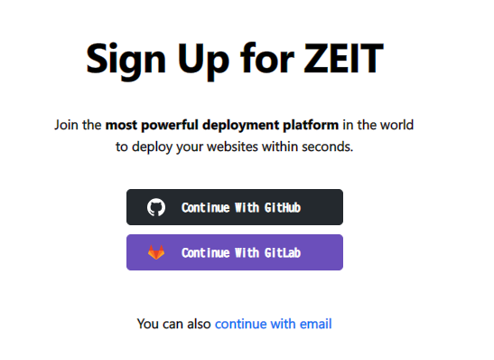

Zeit Now を使ってみた。GitHub 連携したら Vue のデプロイも now.json 不要だった
Zeit という企業が提供する、NOW というウェブサービスがある。当初はゼロコンフィグで静的サイトをデプロイできる、とかいう話で Netlify みたいな感じのサービスだったと思うのだが、最近見てみたら V2 (第2世代) となっていて、Node.js や Python などのプログラムも動作するようになっていた。Heroku よりもさらにお手軽に使える PaaS になっているっぽい。サービス名のググラビリティが低いので、ココでは Zeit Now v2 と表現する。
今回はこの Zeit Now v2 を使って、Vue プロジェクトをビルドし、静的サイトとしてデプロイしてもらおうと思う。Zeit Now のアカウントを登録するところから紹介する。
2020年には Vercel にサービス名を改称している。
目次
- Zeit Now に登録する
- Git Integration (連携) 機能を使って GitHub リポジトリの内容をデプロイする
- Zeit Now CLI を使ってデプロイしてみる
now.jsonを書いてみる- マジでゼロコンフィグかよ…
- 参考文献
Zeit Now に登録する
まずは Zeit Now に登録する。
サイトに移動して「Join Free」ボタンを押下。

「Continue With GitHub」ボタンを押下すると、GitHub アカウントと連携する形で Zeit Now のアカウントが用意される。


連携したら初期設定やプロフィールを入れていく。


ココまで到達できれば登録は OK。
Git Integration (連携) 機能を使って GitHub リポジトリの内容をデプロイする
コード作成済みの GitHub リポジトリがあって、あとは Zeit Now に任せてゼロコンフィグでデプロイしたい、という場合は、このまま画面上で作業していくだけでデプロイが完了する。
Zeit Now の画面で「New Project」のプルダウンを選択し、「From GitHub」を選択する。
すると自分の GitHub リポジトリ一覧が表示されるので、任意のリポジトリを選択する。

すると、Zeit Now がリポジトリの内容を取得し、自動的にプロジェクトの言語やフレームワークを特定、イイカンジにビルド・デプロイが行われる。
初期設定のままだと、
https://【プロジェクト名】-【ランダム文字列】.now.sh
という URL でデプロイされる。このような URL は、GitHub のコミットごとや、後で紹介する Zeit Now CLI を使う度に、URL が自動生成されて作られる。平たくいうと、コミットごとに別々の URL を持った GitHub Pages ができる感じ。
コレとは他に、
https://【プロジェクト名】-git-master.【アカウント名】.now.sh
という URL も出来る。Git Integration を使い、ブランチ名が含まれるという URL になる。コチラはそのプロジェクトで最新のビルド・デプロイ先を参照するエイリアスになっている。
過去のデプロイは URL が異なるので全て残っている。勿論古いデプロイを削除することもできる。
Zeit Now CLI を使ってデプロイしてみる
ココまでで、やりたかったデプロイは出来てしまったのだが、あまりにもゼロコンフィグすぎて、少しくらい自分が意図したとおりに設定ファイルを書いて安心したい気持ちがある。
そこで、Git Integration 機能を使わず、Zeit Now CLI を使ってデプロイをしてみる。
Zeit Now CLI は npm でインストール可能。グローバルインストールする。
$ npm install -g now
次に、CLI でアカウントにログインするため、$ now login コマンドを実行する。
$ now login
(node:15852) ExperimentalWarning: The http2 module is an experimental API.
> We sent an email to 【メールアドレス】. Please follow the steps provided
inside it and make sure the security code matches Snowy Liger.
√ Email confirmed
> Congratulations! You are now logged in. In order to deploy something, run `now`.
メールアドレスを入れると、そのメール宛に確認のメールが飛ぶ。そのメールから Velify すると、動的にコマンドラインが進んでログインが完了する。
now.json を書いてみる
Zeit Now にデプロイするための設定は、.now.json というファイルをプロジェクトルートに用意し、そこに書き込んでいく。
何をどう書いたら良いのか、公式のガイドを見てもイマイチ分からなかったので、見様見真似で書いてみた結果を記す。
now dev を使う
Vue のプロジェクトがあるディレクトリのルートに、こんな設定ファイルを置いた。
now.json
{
"version": 2,
"name": "practice-vue",
"alias": "practice-vue.neos21.now.sh"
}
version: Zeit Now の v2 系を使うため2を指定name: プロジェクト名alias: エイリアスとなる URL。now.shまで含めて書く。アカウントを作ってあるので、【アカウント名】.now.shと書いている
まずは $ now dev というコマンドで、ローカル開発サーバを立てて動作確認できるようなので、コレを試してみる。
Vue Build ($ npm run build) してから、./dist/ ディレクトリを指定して開いてみる。
$ npm run build
$ now dev ./dist/
(node:3500) ExperimentalWarning: The http2 module is an experimental API.
> Now CLI 16.2.0 dev (beta) — https://zeit.co/feedback/dev
> NOTE: Serving all files as static
> Ready! Available at http://localhost:3000
コレで http://localhost:3000/ で Vue のページが開いた。
初めての $ now
now.json にもう少し書き加えて、package.json を見つけてうまくビルドしてくれ、という内容を書いてみる。
{
"version": 2,
"name": "practice-vue",
"alias": "practice-vue.neos21.now.sh",
"builds": [
{
"src": "package.json",
"use": "@now/static-build",
"config": {
"distDir": "dist"
}
}
]
}
ビルド結果は ./dist/ ディレクトリに吐かれるので、それを指定している。routes プロパティがなくていいのか分からない。
@now/static-build を使うと、package.json の中の now-build という名前の npm-run-scripts を自動実行してくれる。ということで package.json に now-build スクリプトを定義しておこう。
package.json
{
"scripts": {
"serve": "vue-cli-service serve",
"build": "vue-cli-service build",
"lint": "vue-cli-service lint",
"now-build": "npm run build"
}
}
コレで $ now dev としてみたが、$ now dev は now.json を読み込んだ形跡がなく、動きが変わらなかった。
$ now dev
(node:7600) ExperimentalWarning: The http2 module is an experimental API.
> Now CLI 16.2.0 dev (beta) — https://zeit.co/feedback/dev
> Creating initial build
# コレでコンソールが終了してしまう
ということで、$ now dev する時は事前に $ npm run build して $ now dev ./dist/ とするしかなさそう。
それじゃあ仕方ない、ということでいよいよ $ now コマンドでデプロイしてみる。
$ now
(node:17304) ExperimentalWarning: The http2 module is an experimental API.
> Deploying C:\Neos21\practice-vue under neos21
> Using project practice-vue
> Synced 2 files (1.27KB) [514ms]
> https://practice-vue-tkg1kf9pf.now.sh [v2] [863ms]
> Ready! Deployed to https://practice-vue.neos21.now.sh [in clipboard] [2m]
routes プロパティを書いていないが、コレで上手くデプロイされていた。

再度 Git Integration を有効にしてみる
Zeit Now CLI で作ったプロジェクトに対し、また Git Integration で GitHub リポジトリ連携してみた。その上で git push してみたところ、Zeit Now のプロジェクトページで Build ログが見られた。
installing build runtime...
build runtime installed: 837.717ms
obtaining caches...
missing `engines` in `package.json`, using default range: 8.10.x
installing to /tmp/403d1885
yarn install v1.17.3
info No lockfile found.
[1/4] Resolving packages...
warning @vue/cli-plugin-eslint > eslint > file-entry-cache > flat-cache > circular-json@0.3.3: CircularJSON is in maintenance only, flatted is its successor.
[2/4] Fetching packages...
info fsevents@1.2.9: The platform "linux" is incompatible with this module.
info "fsevents@1.2.9" is an optional dependency and failed compatibility check. Excluding it from installation.
[3/4] Linking dependencies...
warning " > bootstrap@4.3.1" has unmet peer dependency "jquery@1.9.1 - 3".
warning " > sass-loader@7.3.1" has unmet peer dependency "webpack@^3.0.0 || ^4.0.0".
[4/4] Building fresh packages...
success Saved lockfile.
Done in 45.45s.
running "yarn run now-build"
yarn run v1.17.3
$ npm run build
npm
WARN lifecycle The node binary used for scripts is /tmp/yarn--1568727154064-0.21926342155500111/node but npm is using /node8/bin/node itself. Use the `--scripts-prepend-node-path` option to include the path for the node binary npm was executed with.
> practice-vue@0.0.0 build /tmp/403d1885
> vue-cli-service build
- Building for production...
Starting type checking service...
Using 1 worker with 2048MB memory limit
=============
WARNING: You are currently running a version of TypeScript which is not officially supported by typescript-estree.
You may find that it works just fine, or you may not.
SUPPORTED TYPESCRIPT VERSIONS: >=3.2.1 <3.6.0
YOUR TYPESCRIPT VERSION: 3.6.3
Please only submit bug reports when using the officially supported version.
=============
=============
WARNING: You are currently running a version of TypeScript which is not officially supported by typescript-estree.
You may find that it works just fine, or you may not.
SUPPORTED TYPESCRIPT VERSIONS: >=3.2.1 <3.6.0
YOUR TYPESCRIPT VERSION: 3.6.3
Please only submit bug reports when using the officially supported version.
=============
WARNING Compiled with 2 warnings13:33:05
warning
asset size limit: The following asset(s) exceed the recommended size limit (244 KiB).
This can impact web performance.
Assets:
js/chunk-vendors.d524f53c.js (501 KiB)
warning
entrypoint size limit: The following entrypoint(s) combined asset size exceeds the recommended limit (244 KiB). This can impact web performance.
Entrypoints:
app (951 KiB)
css/chunk-vendors.e660d170.css
js/chunk-vendors.d524f53c.js
css/app.66c18c29.css
js/app.61fa0a97.js
File Size Gzipped
dist/js/chunk-vendors.d524f53c.js 500.82 KiB 140.61 KiB
dist/js/app.61fa0a97.js 9.20 KiB 3.18 KiB
dist/js/about.d8e476a7.js 1.61 KiB 0.81 KiB
dist/css/chunk-vendors.e660d170.css 222.81 KiB 29.95 KiB
dist/css/app.66c18c29.css 217.84 KiB 25.21 KiB
Images and other types of assets omitted.
DONE Build complete. The dist directory is ready to be deployed.
INFO Check out deployment instructions at https://cli.vuejs.org/guide/deployment.html
Done in 32.80s.
done
done
大変長ったらしいが、途中で running "yarn run now-build" と出力されているように、package.json に書いた now-build スクリプトが動いていることが分かる。上手くビルド・デプロイされた。
routes を書いてみる
now.json にルーティング定義を書いてみる。
{
"version": 2,
"name": "practice-vue",
"alias": "practice-vue.neos21.now.sh",
"builds": [
{
"src": "package.json",
"use": "@now/static-build",
"config": {
"distDir": "dist"
}
}
],
"routes": [
{ "src": "/(.*)", "dest": "/dist/$1" }
]
}
念のためローカルで ./dist/ ディレクトリは削除しておき、Zeit Now 上でビルドがされることを確認できるようにした。
この内容で $ now してみた。デプロイは完了し、Vue アプリが表示されたので、Zeit Now 上でビルドされたモノが参照できているようだ。
マジでゼロコンフィグかよ…
何か色々試したけど、now.json で指定したいのは alias の URL くらいで、ビルドもルーティングも、Zeit Now に自動認識させてうまいことやってもらう内容で十分だ。少なくとも Vue プロジェクトは何も考えずにデプロイできてしまった。
Git Integration 機能で GitHub 連携している時は、もはや $ now コマンドすら不要で、$ git push すれば自動的にビルド・デプロイされるので、ホントに何の管理も必要ない、夢のゼロコンフィグが実現されていた。
なお、今回 Zeit Now にデプロイしたプロジェクトは以下。2つの URL はいずれも最新のコミットからビルドされている。
GitHub リポジトリは以下。